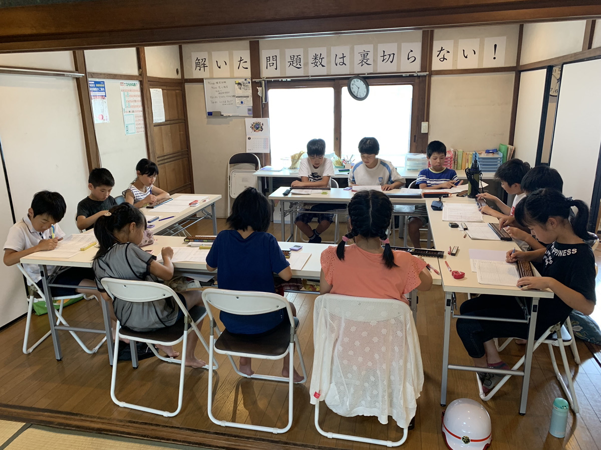
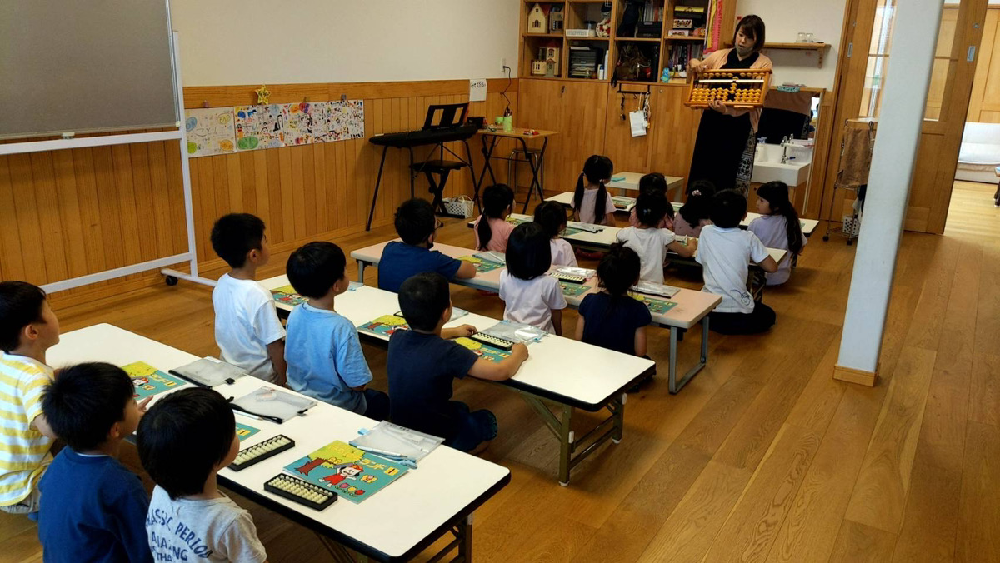
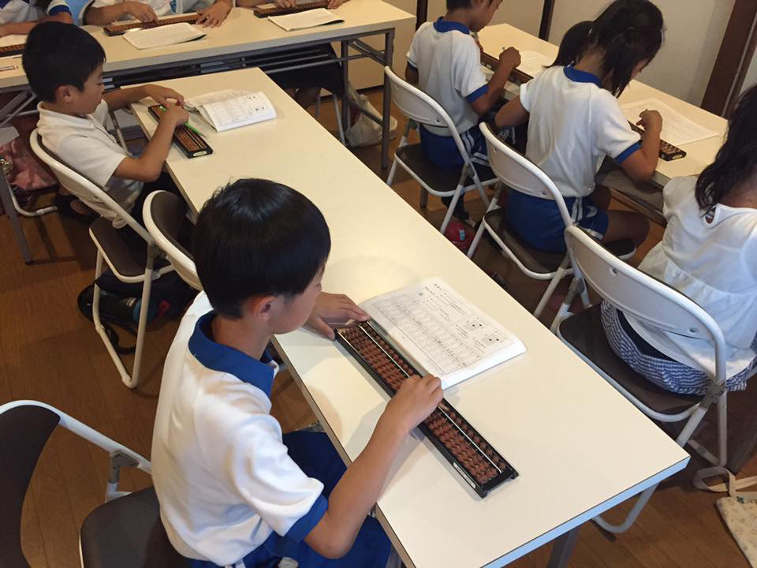

「できた！」が増える、楽珠式
大阪エリア9教室 ｜ 全国31教室展開中 ｜ 2026年4月 大阪エリアにオープン予定
→ 楽珠では：数の感覚を珠で養い、算数の土台をしっかり作ります。
→ 楽珠では：個別指導でそろばんの珠のイメージを丁寧に習慣化します。
→ 楽珠では：フラッシュ暗算などでスピードと正確さを段階的に伸ばします。
→ 楽珠では：短い時間から「できた！」を積み重ね、集中する習慣を育てます。
→ 楽珠では：スモールステップと検定目標で「やり抜く力」を養います。
→ 楽珠では：週1回から通えるので、習い事デビューに最適です。
大丈夫です。
楽珠そろばん教室に通うお子さまの多くが、
「習い事デビュー」や「学習習慣の第一歩」として
スタートしています。
難しくても諦めない、最後まで集中する姿勢を養います。
先生の話をきちんと聞く態度は、あらゆる学習の土台です。
答えを教えるのではなく、子ども自身が気づく環境を作ります。
忙しい現代の子どもたちが効率良く能力が伸びる工夫がたくさんあります。
みんな同じペースでは進みません。楽珠式は一斉授業ではなく、その子の理解に合わせて進めるから安心。初めてのお子さまは指の使い方から、できる子はどんどん先へ進めます。
急な体調不良や学校行事でお休みしても大丈夫。別の日に振替できるので、忙しいご家庭でも安心です。
最も歴史が長い日珠連検定、オンライン受験が可能で受験者数が急増中の日計連検定、暗算力向上に最適なフラッシュ暗算検定。年間6回の挑戦チャンスがあり、珠算暗算資格は受験や就活の評価にもつながります。
教室のみんながライバルになる大会。オンラインコースの海外・全国の子どもたちとも競えます。学年や教室ごとの表彰もあるので誰にでも表彰状・トロフィーのチャンスあり。参加料は無料（参加資格：６級以上）。
数千人以上を指導してきた経験から、より最適な教材を開発し続けています。子どもによって理解度や進みが違うため、指導法や補助プリントで柔軟に対応。何ができて何ができていないかが明確にわかるから、自信をもって次に進めます。
週１回の朝講習「本気の朝練」、週１回の「暗算道場」、月１回の「そろばん研究所」。耐久読み上げ算・フラッシュ暗算イベント・マネースクールなど、様々な特別授業が完全無料。他にない取り組みです。
宿題でわからない時も大丈夫！楽珠生限定の解説動画でしっかり理解できます。保護者用ページには800ページ以上の問題データがあり、家庭学習で問題が足りないことはありません。
１から１０まで書けるようになったらそろばんを始められます。指先を繊細に使うそろばんはバランスの良い脳を育て、大人の脳トレにも大人気。楽珠式は国内30都道府県、海外10カ国に広がっています。
教材費・検定料を含む完全キャッシュレスを導入。海外の方はPayPalでのクレジットカード決済も可能。LINE公式アカウントで24時間、欠席・振替連絡・お悩み相談を受付。電子そろばんやフラッシュ暗算など指導に必要なIT機器も次々に導入しています。
― 年中〜小2は、特に差がつきやすい時期 ―

デジタル時代だからこそ、アナログな指先トレーニングが有効。神経回路が発達するゴールデンエイジに最適です。

算数が本格的に難しくなる前に、量としての数の感覚（暗算力）を身につけ、苦手意識を防ぎます。

宿題が増える前に「机に向かって集中する時間」を習慣にすることで、自ら学ぶ姿勢が身につきます。
体験会では、そろばんの弾き方はもちろん、
教室の雰囲気や先生との相性を確認していただけます。
お子さまの良いところを見つけ、褒めて伸ばす指導を体感してください。
周りのお友達が真剣に取り組む姿を見て、自然と背筋が伸びる瞬間があります。
簡単な問題からスタートし、解けた時の喜びを一緒に分かち合います。
フォームから簡単申し込み。
ご希望のエリアを選択して送信。
大阪エリアの担当よりご連絡。
最寄りの教室をご案内します。
持ち物は一切不要です。
体験テキストはそのままお土産に。
集中できない子 → 座って「できた！」と報告してくれるように
最初は座っていられるか不安でしたが、先生が優しく、スモールステップで進めてくれるので、嬉しそうに報告してくれます。
指で数えていた → 暗算できるように
買い物に行くと合計金額を計算しようとしたり、遊び感覚で数字に親しめています。振替ができるので他の習い事と両立しやすいです。
目標がなかった → 検定合格で「次もっと上を！」と意欲に
合格するたびに目標を持つようになりました。週1回でも着実に力がついているのを実感します。
算数が苦手そうで心配 → 数字に触れるのが楽しそうに
習い事デビューとして楽珠を選びました。少人数で先生の目が行き届き、家でも「今日は〇ができた」と話してくれます。
計算に時間がかかっていた → スピードと正確さがアップ
宿題の計算も以前よりスムーズに。検定に合格したときの笑顔が忘れられません。続けてよかったです。
机に座る習慣がなかった → 週1回の教室が生活のリズムに
同じ時間に通うことで「そろばんの日」ができ、家庭学習のきっかけにもなっています。
2026年4月、大阪エリアにて順次開校予定です。
まずはフォームよりご連絡ください。担当者が最適な教室をご案内します。
全校 2026年4月開校予定
そろばんを通じて手に入れた「自信」と「集中力」は、
お子さまの一生の財産になります。
席数には限りがありますので、お早めにお申し込みください。